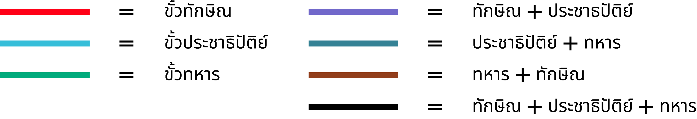

THE CABINET DYNASTY
ครม.ไทย เปลี่ยนฝ่าย
ย้ายข้างมากน้อยแค่ไหน ?
ย้ายข้างมากน้อยแค่ไหน ?
มาดูกันว่า ครม.คนไหนอยู่ขั้วไหน เมื่อไหร่ในประวัติศาสตร์การเมืองไทย
คณะรัฐมนตรี (ครม.) นับเป็นตำแหน่งสำคัญในกระบวนการบริหารของรัฐบาล และการเมือง
การปกครองของประเทศ เก้าอี้ครม. ในแต่ละยุคสมัยทางการเมือง ถูกแต่งตั้ง โยกย้าย
ปรับเปลี่ยนไปด้วยหลายเหตุผลและปัจจัย ทั้งความเหมาะสม ความรู้ความสามารถ
หลายครั้งเก้าอี้ครม.ก็เป็นเครื่องมือต่อรองทางการเมืองที่มีไว้จัดสรรระหว่างกลุ่มอำนาจร่วม รัฐบาล ที่อาจส่งผลต่อเสถียรภาพ และการทำงานของรัฐบาลได้เช่นกัน
หลายครั้งเก้าอี้ครม.ก็เป็นเครื่องมือต่อรองทางการเมืองที่มีไว้จัดสรรระหว่างกลุ่มอำนาจร่วม รัฐบาล ที่อาจส่งผลต่อเสถียรภาพ และการทำงานของรัฐบาลได้เช่นกัน
ELECT ได้ลองนำข้อมูลคณะรัฐมนตรี ตลอด 13 ปีที่ผ่านมา
โดยเลือกช่วงเวลานับตั้งแต่เกิด วิกฤตเศรษฐกิจครั้งใหญ่ในปีพ.ศ. 2540 มาจนถึงปี พ.ศ. 2563
ในรัฐบาลพลเอกประยุทธ์ จันทร์โอชา
โดยสามารถแบ่งขั้วการเมืองออกได้เป็น 3
ขั้วหลักๆ
และสามารถแบ่งประเภทรัฐมนตรีตามขั้วที่เคยสังกัดได้เป็น 2 กลุ่มใหญ่ๆ
1. กลุ่มครม.
ที่มีความยึดโยงกับพรรคการเมือง
ที่มีความยึดโยงกับพรรคการเมือง

2. กลุ่มครม.ลื่นไหล

เมื่อลองสังเกตการ “เชื่อมโยง เปลี่ยนถ่าย ย้ายข้าง” ของครม.ในแต่ละชุดแต่ละสมัย
ผ่านการใช้ Data Visualization มาแสดงให้เห็นความเชื่อมโยง ของครม.แต่ละคน
ตามช่วงเวลา จะสามารถอธิบายกลุ่มก้อนทางการเมือง ได้ดังนี้
1.
กลุ่มครม.ที่มีความยึดโยงกับพรรคการเมือง
กลุ่มครม.ที่มีความยึดโยงกับพรรคการเมือง
เรียกได้ว่าเป็นกลุ่มครม.เพื่อนทักษิณ ด้วยตำแหน่งรัฐมนตรีในรัฐบาลที่ยึดโยงกับพรรค
ไทยรักไทยของทักษิณ ชินวัตร โดยไม่ย้ายสังกัดไปฝั่งใด
ตัวอย่างบุคคลในกลุ่มนี้
จาตุรนต์ ฉายแสง

อุไรวรรณ เทียนทอง

โกวิท วัฒนะ
สุชาติ ธาดาธำรงเวช
เช่นเดียวกันกับ
กลุ่มที่ยึดโยงกับพรรคประชาธิปัตย์มาอย่างแนบแน่น
ตัวอย่างบุคคลในกลุ่มนี้
สุเทพ เทือกสุบรรณ
ไพฑูรย์ แก้วทอง
ในขณะที่
อนุพงษ์ เผ่าจินดา
ชัยชาญ ช้างมงคล
อยู่ในครม.ขั้วทหาร
ที่มีตำแหน่งในรัฐบาลขั้วทหารอย่างต่อเนื่อง

2.
กลุ่มครม. ลื่นไหล
กลุ่มครม. ลื่นไหล
เนื่องด้วยรัฐบาลส่วนมากในประวัติศาสตร์เป็นรัฐบาลแบบผสมหลายพรรค
ดังนั้นจึงเกิดการจัดสรรเก้าอี้ครม.ตามโควต้าต่างๆเพื่อให้แต่ละพรรคได้รับเก้าอี้ตามเสียงสนับ
สนุน หรือในบางกรณีถูกเชิญเข้ามาดำรงตำแหน่งในหลายครม.
ครม.กลุ่มนี้สามารถแบ่งออกมาได้เป็นหลายแขนง
2.1. กลุ่มสามมิตร (ขั้วทักษิณ ย้ายไป ขั้วทหาร)
เป็นสมาชิกกลุ่มส.ส.ที่มีอิทธิพล โดยเรียกตนเองว่ากลุ่มสามมิตร โดยล้วนเป็นส.ส.ในขั้วทักษิณ
ที่ย้ายข้างมาอยู่พรรคพลังประชารัฐและก่อตั้งรัฐบาลได้สำเร็จ
ตัวอย่างบุคคลในกลุ่มนี้
สมศักดิ์ เทพสุทิน
สุริยะ จึงรุ่งเรืองกิจ

สันติ พร้อมพัฒน์
2.2. กลุ่มประชาธิปัตย์ร่วมรัฐบาลประยุทธ์
หลังจากพรรคประชาธิปัตย์ตบเท้าร่วมรัฐบาลประยุทธ์ 2 ก็ได้รับการจัดสรรที่นั่งรัฐมนตรี
ชื่อของทั้ง 3 คนนี้ ต่างปรากฏในชื่อของรัฐมนตรีกระทรวงสำคัญ
ตัวอย่างบุคคลในกลุ่มนี้
จุรินทร์ ลักษณวิศิษฏ์
กัลยา โสภณพนิช
จุติ ไกรฤกษ์
2.3. กลุ่มเนติบริกร และเทคโนแครต
เป็นตัวอย่างของกลุ่มนักวิชาการทางกฎหมายและเทคโนแครต
ที่เข้ามากุมตำแหน่งสำคัญๆในรัฐบาลหลายสมัย ทั้งรัฐบาลที่มาจากการเลือกตั้ง
และรัฐบาลจัดตั้งภายหลังจากการรัฐประหาร
ตัวอย่างบุคคลในกลุ่มนี้

สมคิด จาตุศรีพิทักษ์
วิษณุ เครืองาม

ม.ร.ว.ปรีดิยาธร เทวกุล
2.4. กลุ่มพรรคขนาดกลาง
รายชื่อนี้เป็นเพียงตัวอย่างของกลุ่มครม.ที่มาจากพรรคขนาดกลาง หรือมีชื่อเสียงจากการเป็น
นักการเมืองที่มีอิทธิพลในท้องถิ่น กลุ่มครม.เหล่านี้มีลักษณะการย้ายข้างที่ลื่นไหลกว่า
กลุ่มอื่นๆ โดยสามารถใช้ที่นั่งส.ส. ที่ตนมีมาใช้แลกโควต้าเก้าอี้ครม.ในรัฐบาลทุกยุคทุกสมัย
โดยเฉพาะในรัฐธรรมนูญ พ.ศ. 2560 ที่ระบบการเลือกตั้งเพิ่มอำนาจให้พรรคขนาดกลาง
ตัวอย่างบุคคลในกลุ่มนี้
สนธยา คุณปลื้ม
ชุมพล ศิลปอาขา

เนวิน ชิดชอบ
อนุทิน ชาญวีรกูล
ในส่วนนี้ เราสามารถลอง Explore ข้อมูลการเปลี่ยนถ่าย โยกย้ายของครม. แต่ละคน แต่ละชุด ได้ด้วยตัวเอง โดยเลื่อนดูจากซ้ายไปขวา
คลิกที่เส้น จะสามารถสำรวจเส้นทางการเป็นครม.ของแต่ละคน
ได้พร้อมรายละเอียดเพิ่มเติมเกี่ยวกับรัฐมนตรีคนนั้น
คลิกที่กล่องคณะรัฐมนตรีจะสามารถอ่านรายละเอียดของคณะรัฐมนตรีในสมัยนายกรัฐมนตรีคนนั้นได้
หมายเหตุ : ELECT ได้เลือกนำเสนอข้อมูลเฉพาะรายชื่อของสมาชิกครม.ที่ปรากฏตำแหน่งในคณะรัฐมนตรีมากกว่า 2
ชุดขึ้นไป
ย้ายข้าง เปลี่ยนขั้ว มากน้อยแค่ไหน?
เมื่อลองนำรายชื่อครม. มาวางลงบนขั้วฐานอำนาจให้เห็นตามระยะเวลา
จะสามารถสังเกตไทม์ไลน์ของการย้ายข้างตั้งแต่อดีตถึงปัจจุบัน
วงกลมแต่ละวง = รัฐมนตรี 1 คน | ขนาดวงกลม = จำนวนสมัยที่ดำรงตำแหน่ง ขนาดยิ่งใหญ่ ยิ่งอยู่นาน
สามารถกดวงกลมเพื่อดูชื่อรัฐมนตรี และ เลื่อนแถบด้านล่างเพื่อดูการเปลี่ยนแปลงตามช่วงเวลา

สุวิทย์ คุณกิตติ
คือ
คนที่อยู่หลายครม. มากที่สุด
มีสถิติอยู่ในครม.กว่า 5 ชุด ใน 4 รัฐบาล ตั้งแต่สมัย ชวน หลีกภัย, ทักษิณ ชินวัตร, สมัคร สุนทรเวช ไปจนถึงรัฐบาล อภิสิทธิ์ เวชชาชีวะ
โดยสามารถสังเกตุได้จากขนาดของวงกลมที่ใหญ่ที่สุด
มีสถิติอยู่ในครม.กว่า 5 ชุด ใน 4 รัฐบาล ตั้งแต่สมัย ชวน หลีกภัย, ทักษิณ ชินวัตร, สมัคร สุนทรเวช ไปจนถึงรัฐบาล อภิสิทธิ์ เวชชาชีวะ
โดยสามารถสังเกตุได้จากขนาดของวงกลมที่ใหญ่ที่สุด
สุริยะ จึงรุ่งเรืองกิจ
สมศักดิ์ เทพสุทิน
คือ
คนที่ย้ายขั้วทางการเมืองมากที่สุด
อยู่ครบ-ขั้วการเมืองทั้ง 3 ขั้ว นับตั้งแต่รัฐบาลชวน หลีกภัย ทักษิณ ชินวัตร ไปจนถึง ประยุทธ์ จันทร์โอชาในปัจจุบัน
วงกลมทั้งสองคนจะอยู่ในกลางสามเหลี่ยม
แสดงให้เห็นถึงการไม่เอนเอียงไปข้างใดข้างหนึ่ง
อยู่ครบ-ขั้วการเมืองทั้ง 3 ขั้ว นับตั้งแต่รัฐบาลชวน หลีกภัย ทักษิณ ชินวัตร ไปจนถึง ประยุทธ์ จันทร์โอชาในปัจจุบัน
วงกลมทั้งสองคนจะอยู่ในกลางสามเหลี่ยม
แสดงให้เห็นถึงการไม่เอนเอียงไปข้างใดข้างหนึ่ง
การย้ายขั้ว เปลี่ยนข้างในคณะรัฐมนตรี กลายเป็นวิสัยปกติของการเมือง
แสดงให้เห็นท่าทีที่ลื่นไหลของกลุ่มการเมืองในไทย ที่ทั้งเจาะจงและไม่ได้เจาะจงพรรคการเมืองใดเป็นหลัก
สิ่งนี้ยังสามารถใช้สำรวจพฤติกรรมของกลุ่มการเมืองในไทยได้อย่างมีนัยยะสำคัญ
Disclaimer:
แนวโน้มนี้ไม่สามารถการันตีอุดมการณ์ในอนาคตของนักการเมืองที่กล่าวมาทั้งหมดได้
แนวโน้มนี้ไม่สามารถการันตีอุดมการณ์ในอนาคตของนักการเมืองที่กล่าวมาทั้งหมดได้
แหล่งข้อมูลอ้างอิง
- คริส เบเคอร์ และ ผาสุก พงษ์ไพจิตร, ประวัติศาสตร์ไทยร่วมสมัย, หน้า xx
- https://www.prachachat.net/politics/news-345654
- https://ilaw.or.th/node/5229
- https://th.wikipedia.org/wiki/สุวิทย์_คุณกิตติ